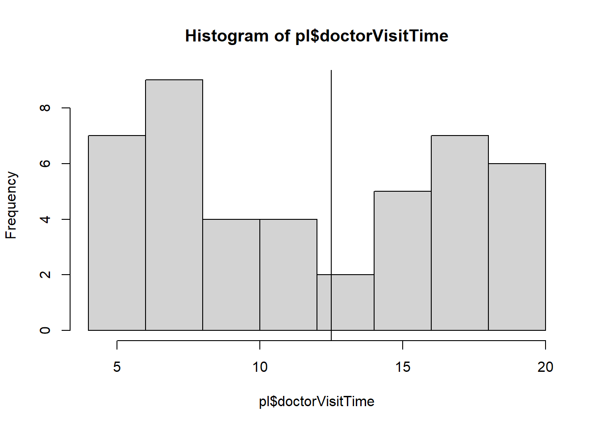
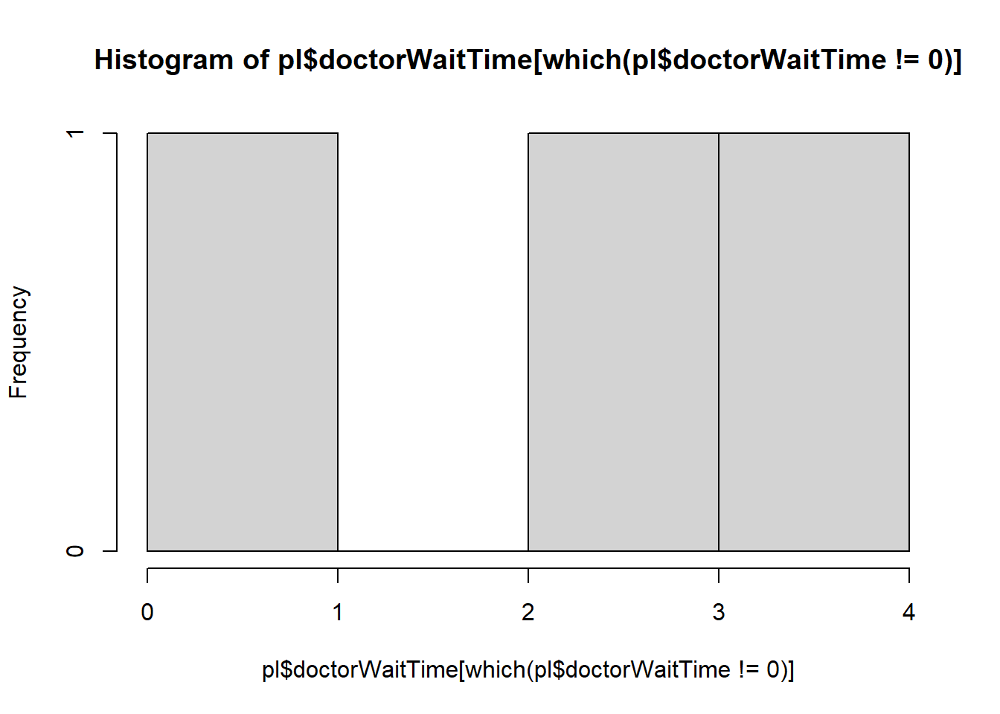
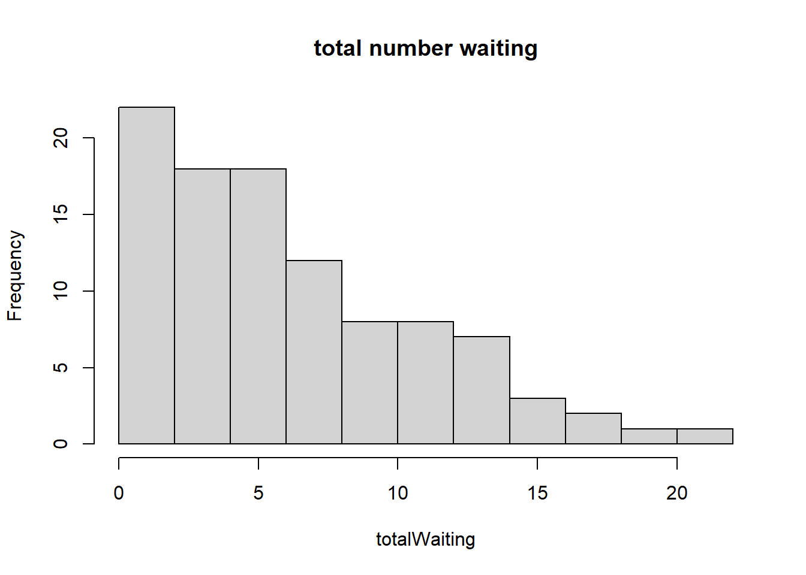
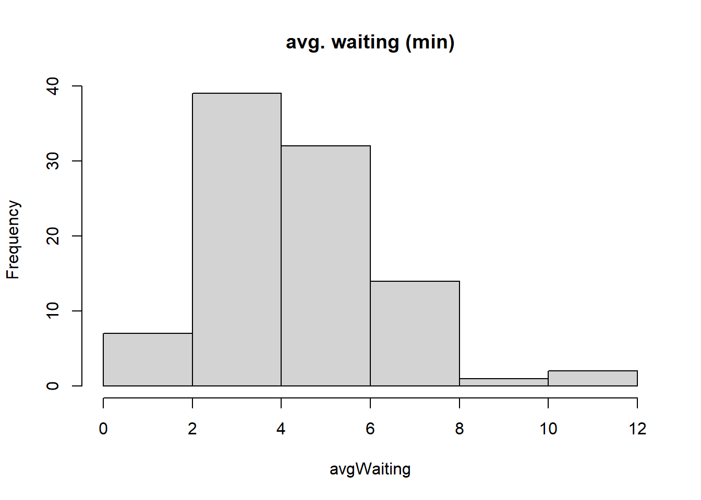
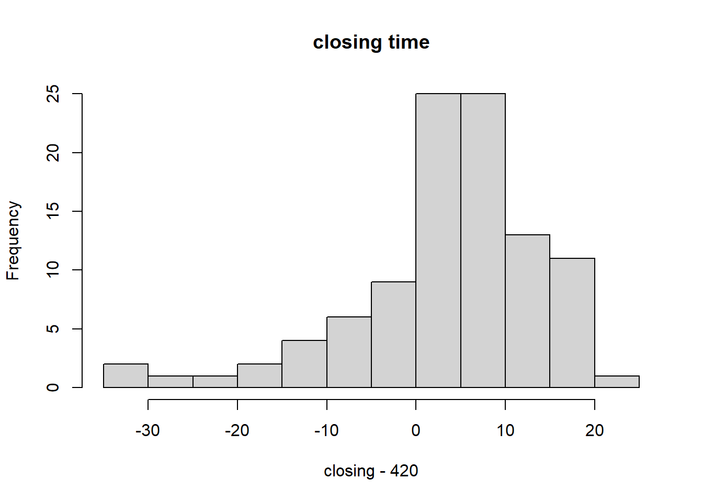

Chapter 1 Fundamentals of Bayesian Inference
The first few chapters of Gelman’s text are introductory, and we attempt to highlight the key definitions and summarize each chapter. At the end of each chapter we attempt several problems. Probability and inference is defined using three steps
- setting up the full probability model for a joint distribution for all observable and unobservable quantities.
- Conditioning on observed data: computing the appropriate posterior distribution, the conditional probability distribution of the unobserved quantities of oltimate interest, given the observed data.
- Evaluating the fit of the model.
1.1 General notation for statistical inference
There are two different kinds of estimands, the first are potentially observable quantities, such as future observations of a process, and the second are quantities that are not directly observable, namely the parameters that govern a process being investigated.
Exchangeability
One key assumption is that the n values \(y_i\) are regarded as exchangeable, meaning that the uncertainty can be expressed as a joint probability \(p(y_1,...,y_n)\) that is invariant to permutations of indexes. Often times the exchangeable distribution is modeled as iid.
Explanatory variables
It is common to have observations on each unit which have non-random variables called explanatory variables or covariates. The explanatory variables are usually denoted by X. However treating X as random then exchangeability can be extended \((x,y)_i\) which is invariant to permutations of the indexes. Further, it is always appropriate to assume exchangeability of y, conditioned on sufficient information of X, where the indexes can be thought of as randomly assigned. It follows that if two units have the same value of x, then the distributions of y are the same.
1.2 Bayesian inference
The prior, p(\(\theta\)), and the sampling distribution, or the data distribution, \(p(y|\theta)\) is related to the joint distribution by
\[ p(\theta,y) = p(\theta)p(y | \theta)\]
Where using Bayes’ rule the posterior distribution \[\begin{equation} p(\theta | y ) = \frac{p(\theta)p(y| \theta)}{p(y)} \tag{1.1} \end{equation}\]
Where \(p(y) = \int p(\theta)p(y | \theta)d\theta\), or a sum in discrete case. An equivalent form of (1.1) is the unnormalized posterior density given as
\[\begin{equation} p(\theta | y ) \propto p(\theta)p(y | \theta) \tag{1.2} \end{equation}\]
Note that \(p(y | \theta)\) is taken as a function of \(\theta\), not of y.
Prediction
Inferences about an unknown observable variable, are called predictive inferences. Before the data y are considered, the distribution of the unknown, observable, y is \[ p(y) = \int p(y,\theta)d\theta = \int p(\theta)p(y | \theta)d\theta\]
this is defined as the marginal distribution of y, and also called prior predictive distribution. Prior refers that the data is not conditional on any previous observation, and predictive refers to the data being observable.
The posterior predictive distribution is conditional on the observed y, but is predictive because it is predicting observable values.
\[\begin{equation} \begin{split} p(\hat{y} | y) &= \int p(\hat{y}, \theta | y) d\theta \\ &= \int p(\hat{y} |\theta, y) p(\theta|y) d\theta \\ & = \int p(\hat{y}| \theta) p(\theta | y) d\theta \\ \end{split} \tag{1.3} \end{equation}\]
Likelihood
The data y affects the posterior inference only through (1.2) likelihood function \(p(y| \theta)\) which is regarded as a function of \(\theta\) for fixed y. The likelihood function is defined as \(p(y | \theta)\), and the likelihood principle is for any given sample, and any two likelihood models \(p(y | \theta)\), two models with the same likelihood will have the same inference for \(\theta\).
Subjectivity and Objectivity
The frequentist models, MLEs, have subjectivity in their assumptions because they rely on long sequence of identical trials, that are iid. The Bayesian model relies on the prior distribution. If any experiment is repeatable and can replicated, the the prior distribution can be estimated from the data themselves and the analysis is more ‘objective’. Replication increases objectivity of a given model. However the Bayesian approach allows for (1) the ability to combine information from multiple sources (allowing for greater objectivity) and (2) more encompassing by accounting for uncertainity about the unknowns in a statistical problem.
It is important to include as much background information as possible
1.3 Exercises
- Suppose for \(\theta=1\), then y\(\sim N(1,\sigma)\), and if \(\theta=2, y\sim N(2,\sigma)\). Where P(\(\theta=1)=P(\theta=2)=0.5\).
- For \(\sigma=2\); we must write the formula for the pdf of y. \(p(y) = \sum_\theta p(y|\theta)p(\theta) = (1/2)N(1,\sigma^2)+ (1/2)N(2,\sigma^2)\) as the marginal density.
fy<-function(y) {return(0.5*dnorm(y,mean=1,sd=2)+0.5*dnorm(y,2,sd=2))} (b) $P(\theta=1 | y=1) = \frac{p(\theta=1)p(y|\theta=1)}{p(y)}= \frac{(1/2)N(1,4)}{(1/2)N(1,\sigma^2)+ (1/2)N(2,\sigma^2)}$ = 0.53 dy<-function(y){ return( (1/2)*dnorm(y,mean=1,sd=2)/fy(y))}
dy(1)## [1] 0.5312094- twelve games with point spread of 8 points.
- Using relative frequency, P(favorite wins \(|\) point spread =8) = 0.67.
P(favorite wins by at least 8 \(|\) point spread =8) = 0.42.
and P(fav. wins by at least 8 \(|\) spread =8, favorite team wins) = 0.62.
- Using relative frequency, P(favorite wins \(|\) point spread =8) = 0.67.
spread<-8
## outcome of the games favor score - underdog score
games<-c(-7,-5,-3,-3,1,6,7,13,15,16,20,21)
## frequentist approach
fav.wins<- mean(games>0)
message(paste0("(frequentist): fav wins: ", round(fav.wins,2)))## (frequentist): fav wins: 0.67 fav.by.8<- mean((games>8))
message(paste0("(frequentist): fav wins by 8: ", round(fav.by.8,2)))## (frequentist): fav wins by 8: 0.42 ## P( fav. wins >8 | fav. wins) = P(fav. wins > 8, fav. wins )/ P(fav. wins)
cond<-sum(games>8 & games>0)/sum(games>0)
c<-fav.by.8/fav.wins
message(paste0("(frequentist): fav wins by 8 given fav. wins: ", round(cond,2)))## (frequentist): fav wins by 8 given fav. wins: 0.62- now we assume a normal distribution with \(d|x \sim N(-1.25, 10.10)\). So \(P(d > -x)= P(Z\sigma+\mu > -x)=P(Z > -x-\mu / \sigma)\)
- Probablity fav team wins is 0.75
- fav team wins by 8 (beats the spread) is 0.45, we expect this to be 0.5 (the middle of the normal distribution because we centered on the spread)
- P(wins by 8 \(|\) favorite team wins) = P(favorite team wins \(|\) wins by 8)P(wins by 8)/P(favorite team wins) = P(wins by 8)/P(fav. team wins) since the conditional prob. =1 given the favorite team wins. The prob. that they win by at least 8 is 0.6.
## part b
d<-games-8
sample.mean <-mean(d)
sample.sd<-sd(d)
## assume d|x ~ N(0,10.10)
fav.wins.norm<- 1-pnorm(-8,mean=sample.mean,sd=sample.sd)
message(paste0("(normal): fav wins: ", round(fav.wins.norm,2)))## (normal): fav wins: 0.75 fav.by.8.norm<-1-pnorm(0,mean=sample.mean,sd=sample.sd)
message(paste0("(normal): fav wins by 8: ", round(fav.by.8.norm,2)))## (normal): fav wins by 8: 0.45## Pr(Wins by 8 | Fav. wins) = P(Fav. wins | wins by 8)P(wins by 8) / P(fav. wins)
## P(Fav. wins | wins by 8) = 1
cond.norm<-fav.by.8.norm/fav.wins.norm
message(paste0("(normal): fav wins by 8 given fav. wins: ", round(cond.norm,2)))## (normal): fav wins by 8 given fav. wins: 0.6- We need to estimate the probability that there is at least one congressional election that is tied in the next U.S. election. There are 435 senate elections.
- The parameters of interest are \(\theta_i\) the true probability that the election is tied. We can let the prior \(\theta \sim Beta(\alpha,\beta)\). The likelihood is \(y|\theta_i \sim Binomial(435,\theta_i) = \theta^{\sum y_i}(1-\theta)^{435-\sum y_i}\) follows a Binomial distribution (ignoring the binomial coefficient) where we assume each election is independent. Hence the posterior for theta \(f(\theta | y) \sim Beta(\sum y_i +\alpha, n-\sum y_i +\beta)\). where \(\alpha,\beta\) are set to 1 for the uniform prior. For this case we set \(\alpha, \beta\) equal to 1, 10 which has a prior mean of 0.09.
theta=seq(from=0,to=1,by=.01)
plot(theta,dbeta(theta,1,10),type='l')- In the period of 1900-1992, there were 20,597 elections, out of which 6 were decided by less than 10 votes, and 49 were decided by less than 100 votes.
we can estimate the probability of a tie to be less than 6/20,597 and bounded by 49/20,597. So for the Binomial trials the sum of the successes is 6, and n=20,597, so the posterior could be \(\theta | y \sim Beta(1+6, 10+20,597 -6)\) is the posterior for \(\theta\). This assumes that 10 votes is within the neighborhood of an election tie.
The question asks to compute at least one election tie, from a total of 435 elections. This follows a Binomial(435, \(\hat{\theta})\). Where we use the posterior mean to estimate \(\theta\). The posterior mean using the Beta(7,20601) yields a mean of \(\hat{\theta}=\frac{7}{20608} = 3.4e-04\) as the posterior mean.
Then the probability that at least 1 election is tied, from 435 total elections will follow a Binomial(435, \(\hat{\theta})\), where we can use the posterior distribution for \(\theta | y\) in the Binomial likelihood \(P(X\geq 1 | \hat{\theta})= 1-P(X\leq0 | \hat{\theta})\) which has a probability of 0.14 of at least 1 election tie.
# the posterior for theta is Beta(1+6,10+20597-6)
plot(theta,dbeta(theta,7,10+20597-6),type='l') ## posterior mean is 7/(20601)
## then P(X>=1) = 1-P(X<=0 | p)
1-pbinom(0,435,prob=7/20608)## [1] 0.1373819A clinic has three doctors. Patients come into the clinic at random, starting at 9 a.m. according to a Poisson process, with a time parameter, t, of 10 minutes; that is after opening the first patient appears follows an exponential distribution with average waiting time of 10 minutes. Then the next patient arrives with a waiting time of an expected 10 minutes as iid exponential distribution. After a patient arrives, the patient waits until a doctor is available, and the doctor visits a patitient uniformly between 5-20 minutes. The clinic stops admitting patients at 4 pm, and closes after the last patient is completed with the visit.
- Simulate this process once. how many patients visited the office? how many had to wait for a doctor? what was the average wait? when did office close?
### waiting time for a new patient to arrive in the clinic
###########################################################
# patientList is the data frame of all patients
# closeTime is the time to stop admitting (420 minutes)
# currentPatient Number
# current time is the running total of time
newPatientArrival<-function(patientList,
closeTime=timeToClose,
waitTime,
visitTime,
currentPatientNumber=0,
currentTime,
assignedDoctor="none",
completionTime=0){
# waiting time for next patient
patientTime<-round(rexp(1,rate=1/10),2)
# current time of existing patients
current<-max(patientList$currentTime)
## the clinic stops admitting patients at 4pm
if( (current+patientTime)<=closeTime){
## in minutes
newPatient<-createPatientChart(currentPatientNumber,patientTime,waitTime,visitTime,currentTime,assignedDoctor,0)
}else{
newPatient<-createPatientChart(currentPatientNumber,patientTime,waitTime,visitTime,currentTime,"closed_notAdmitted",0)
}
return(newPatient)
}
####################
computeWaitTime<-function(doctors=NULL,
patientList=NULL,
patientID=1){
## need to compute visiting time (booked)
## next time available
## required input current time for a specific doctor/patient ?
# patient time (minutes)
## FIX ME: it is grabbing 2 patient IDs?
currentTime<-patientList$currentTime[which(patientList$patient==patientID)]
visitTime<-runif(1,min=5,max=20) ## minutes
if(any(doctors$nextTimeAvail<currentTime)){
waitTime=0
assignedDr<-sample(doctors$dr[which(doctors$nextTimeAvail<currentTime)],1)
### current time + visitTime
nextAvailTime<- visitTime+currentTime+waitTime
## completion time for patient exit (closing time).
}else if(any(doctors$nextTimeAvail<currentTime)==FALSE){
# all doctors are booked, no available doctors.
# wait time is the difference between next available time (assuming all times are greater than patient time)
waitTime<-min(doctors$nextTimeAvail-currentTime)
assignedDr<-doctors$dr[which( (doctors$nextTimeAvail-currentTime)==min(doctors$nextTimeAvail-currentTime))]
if(length(assignedDr)>1){
assignedDr<-assignedDr[1]
}
nextAvailTime<- visitTime+currentTime+waitTime ## completion time for patient to exit
}## if all doctors unavail
#print(assignedDr)
#print(currentTime)
## update doctor list
doctors[which(doctors$dr==assignedDr),'visitingPatient']<-patientID
doctors[which(doctors$dr==assignedDr),'nextTimeAvail']<-nextAvailTime
doctors[which(doctors$dr==assignedDr),'currentTime']<-currentTime ## patient time
doctors[which(doctors$dr==assignedDr),'visitTimeLength']<-visitTime
# flag avail to no.
doctors[which(doctors$dr==assignedDr),'avail']<-'no'
## update patient list
patientList[which(patientList$patient==patientID),'doctorWaitTime']<-waitTime
patientList[which(patientList$patient==patientID),'doctorVisitTime']<-visitTime
patientList[which(patientList$patient==patientID),'assignedDoctor']<-assignedDr
patientList[which(patientList$patient==patientID),'completionTime']<-nextAvailTime
return(list(patient=patientList,doctor=doctors))
}
## creates a patient object
createPatientChart<-function(currentPatientNumber,arrivalTime,waitTime,visitTime,currentTime,assignedDoctor,completionTime){
patientID<-data.frame(patient=currentPatientNumber+1,
arrivalTime=arrivalTime,
doctorWaitTime=waitTime,
doctorVisitTime=visitTime,
currentTime=currentTime,
assignedDoctor=assignedDoctor,
completionTime=0)
return(patientID)
}
updatePatientList<-function(patientList,patientID){
patientList<-rbind(patientList,patientID)
return(patientList)
}
updateTime<-function(currentTime,newTime=NULL,p1){
p1$currentTime<-currentTime+newTime
return(p1)
}
totalPatients<-0
## this is the simulation
## first task : loop through the time update for patients
## second task : include the doctor assignment query.
simulateProcess<-function(doctors=NULL,
totalWait=NULL,
totalPatients=0,
timeToClose=420,
currentTime=NULL){
## initiate Patient List
patientList<-data.frame(patient=0,
arrivalTime=0,
doctorWaitTime=0,
doctorVisitTime=0,
currentTime=0,
assignedDoctor='none',
completionTime=0)
## not sure what to put here.
currentTime<-patientList$currentTime[which(patientList$patient==max(patientList$patient))] ## current time is the max current time from patient chart.
currentPatientNumber<-0
## timeToClose (minutes) is stopping to admit patients
while(currentTime<timeToClose){
## patient enters after the (i-1) patient enters.
p1<-newPatientArrival(patientList,
closeTime=timeToClose,
waitTime=0,
visitTime=0,
currentPatientNumber=currentPatientNumber,
currentTime)
## update time
p1<-updateTime(p1$currentTime,newTime=p1$arrivalTime,p1)
# given a patient time, switch the availability of any doctor
# if a doctors next available time is less than the current time, switch him to available
## FIX ME: need to ensure this flag is correct.
if(any(doctors$nextTimeAvail<p1$currentTime)){
doctors$avail[which(doctors$nextTimeAvail<p1$currentTime)]<-'yes'
}
## create a patient list
if(currentPatientNumber==0){
patientList<-p1
# update patient number
currentPatientNumber<-currentPatientNumber+1
}else{
patientList<-rbind(patientList,p1)
# update patient number
currentPatientNumber<-currentPatientNumber+1
}
## task 2 assign a doctor
### check for doctor availability
## compute wait time, and/or compute the next available time
## returns a list object.
clinicList<-computeWaitTime(doctors,patientList,patientID=patientList$patient[currentPatientNumber])
doctors<-clinicList[["doctor"]]
patientList<-clinicList[["patient"]]
## update flags
# update currentTime
## current time is cumulative sum of the arrival times.
currentTime<-patientList$currentTime[which(patientList$patient==max(patientList$patient))] ## current time is the max current time from patient chart.
## fix me:
## reset doctor availability based on current patient time.
upID<-which(doctors$nextTimeAvail<currentTime)
doctors$nextTimeAvail[upID]<-currentTime
doctors$currentTime[upID]<-currentTime
doctors$visitTimeLength[upID]<-0
}## while loop
return(list(patient=patientList,doctors=doctors))
} doctors<-data.frame(dr=c('a','b','c'),
visitingPatient=c(0,0,0), ## who is doctor seeing (patient ID)
visitTimeLength=c(0,0,0), # length of doctor visit U(5,20)
currentTime=c(0,0,0), ## current Time
nextTimeAvail=c(0,0,0), ## current time + visitTimeLength = next avail time.
avail=c("yes","yes","yes"))
## initiate times
totalWait<-0
currentPatientNumber<-0
## clinic opens at 9am -4pm that is 7 hours (420 min.)
timeToClose<-7*60 ## stops admiting patienets in 420 minutes
## current time is 0
## this will be the running total of minutes.
currentTime<-0
res<-simulateProcess(doctors,
totalWait,
totalPatients,
timeToClose,
currentTime)
pl<-res$patient[which(res$patient$currentTime<=420),]
hist(pl$doctorVisitTime)
abline(v=(20+5)/2) ## should be ~12
hist(pl$arrivalTime) ## should be close to 10 exp(1/10) has mean 10
hist(pl$doctorWaitTime[which(pl$doctorWaitTime!=0)]) ## about 2.41
print(max(pl$completionTime)-420) ## closing time## [1] 7.869564 print(max(pl$patient)) ## total patient should be 42## [1] 48## (20-5)/6 + 10 this is about 12.5 minutes of arrival + visit time. which is approximately close to 10
## the arrival time is about 10 minutes.
## we should expect 42 patients
#420/10
## sanity check
#all(pl$currentTime+pl$doctorWaitTime+pl$doctorVisitTime-pl$completionTime==0)Simulation 100 times
total number of patients was approximately 42, which we expect since the total 420/10. The total number waiting with 3 doctors is 6.61 for 1 day. the average waiting time was about 4-5 minutes. For 1 day, the average closing time was 5.32 minutes after 4 pm
totalPat<-NULL
totalWaiting<-NULL
avgWaiting<-NULL
closing<-NULL
patientList<-NULL
p1<-NULL
for(i in 1:100){
doctors<-data.frame(dr=c('a','b','c'),
visitingPatient=c(0,0,0), ## who is doctor seeing (patient ID)
visitTimeLength=c(0,0,0), # length of doctor visit U(5,20)
currentTime=c(0,0,0), ## current Time
nextTimeAvail=c(0,0,0), ## current time + visitTimeLength = next avail time.
avail=c("yes","yes","yes"))
## initiate times
totalWait<-0
totalPatients<-0
currentPatientNumber<-0
## clinic opens at 9am -4pm that is 7 hours (420 min.)
timeToClose<-7*60 ## stops admiting patienets in 420 minutes
## current time is 0
## this will be the running total of minutes.
currentTime<-0
res<-simulateProcess(doctors,
totalWait,
totalPatients,
timeToClose,
currentTime)
pl<-res$patient[which(res$patient$currentTime<=420),]
totalPat<-c(totalPat,max(pl$patient))
totalWaiting<-c(totalWaiting,nrow(pl[which(pl$doctorWaitTime!=0),]))
avgWaiting<-c(avgWaiting,mean(pl[which(pl$doctorWaitTime!=0),"doctorWaitTime"]))
closing<-c(closing,max(pl$completionTime))
}
hist(totalPat,main="total patients")
abline(v=420/10,col='red')
hist(totalWaiting,main="total number waiting")
hist(avgWaiting,main="avg. waiting (min)")
hist(closing-420,main="closing time")